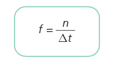
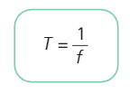
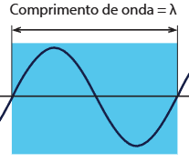
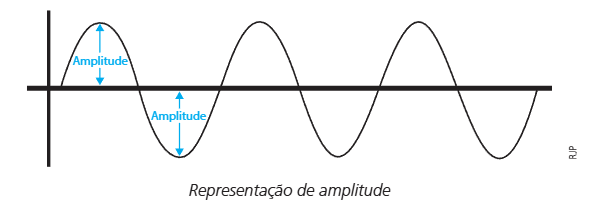
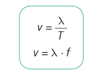

Grandezas características das ondas
Frequência
A frequência corresponde ao número de oscilações completas de uma onda dividido pelo intervalo de tempo.
A frequência é medida em Hz (Hertz), o número de oscilações é representado pela letra n e não possui unidade de medida. ∆t representa, por fim, o tempo inicial subtraído do tempo final e é representado em segundos (s).
Período
É a representação do tempo gasto para uma oscilação completa.
A letra T é o determinado perído, medido em segundos (s), e a letra f é a frequência, em Hertz, anteriormente citada.
Comprimento de onda
Corresponde à distância percorrida pela onda, em determinado período. Contudo, o comprimento de uma onda é medido de maneiras diferentes, de acordo com o tipo de onda a ser medido.
O comprimento de onda é representado por λ (lambda).
Amplitude
Amplitude é a distância entre uma crista ou um vale até o eixo horizontal de propagação. A energia da onda está relacionada com a amplitude, uma vez que quanto maior for a amplitude, maior a energia transportada.
Velocidade de propagação
A velocidade de propagação é o quão rápido uma onda transmite a própria energia. Essa velocidade depende do meio a qual essa onda se encontra e o tipo de onda. Com isso, essa velocidade se relaciona com o intervalo de tempo do próprio deslocamento.
Ressonância
A ressonância mecânica é uma propriedade da ondulatória que caracteriza a reflexão de pulsos energéticos em uma frequência igual a uma das frequências naturais de um objeto.
Com isso, todo objeto possuí uma frequência natural. Quando a frequência induzida alcança essa frequência natural, o objeto passa a entrar em um estado de ressonância, e começa a vibrar com frequência e amplitude ampliadas.
Um exemplo de ressonância mecânica faz-se presente no empurrar de um balanço: quando se aplica uma determinada força ao balanço e esta coincide com a frequência natural do brinquedo. Ele, então, passa a alcançar cada vez mais altura, aumentando a própria amplitude. Contudo, esse fenômeno é apenas observado quando o movimento é periódico, executado de forma regular, durante um período.